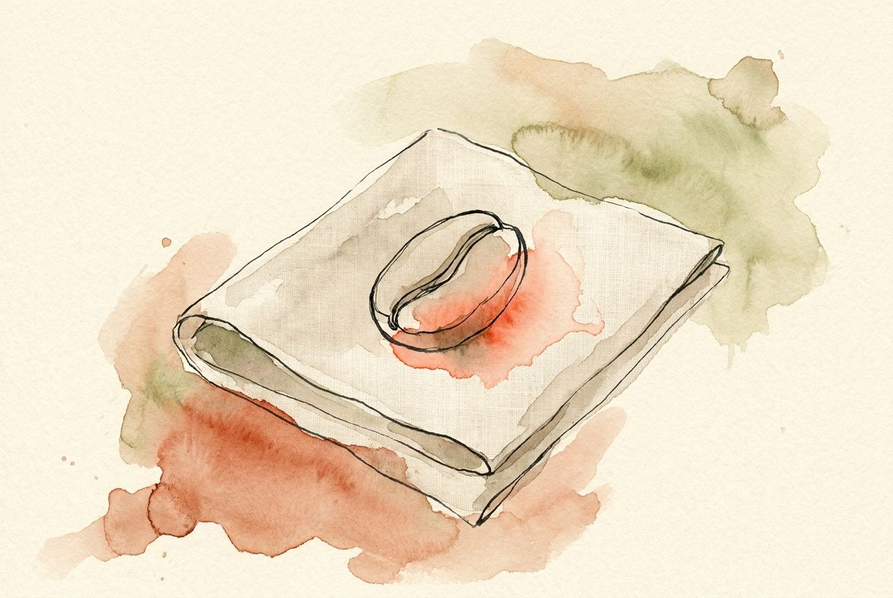
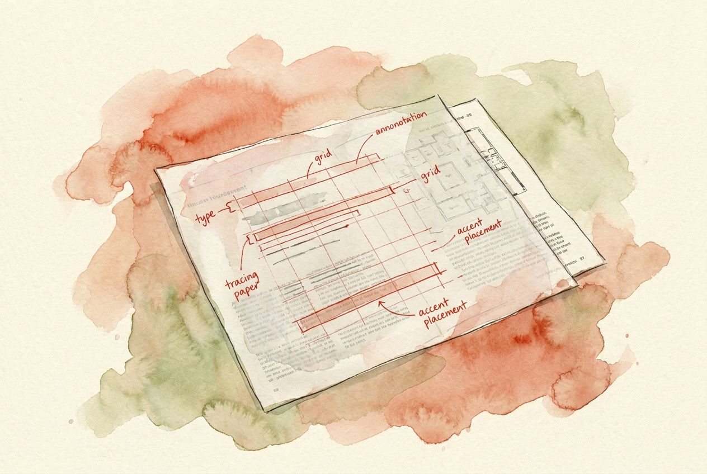
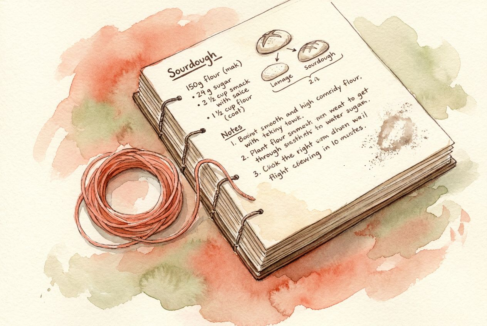
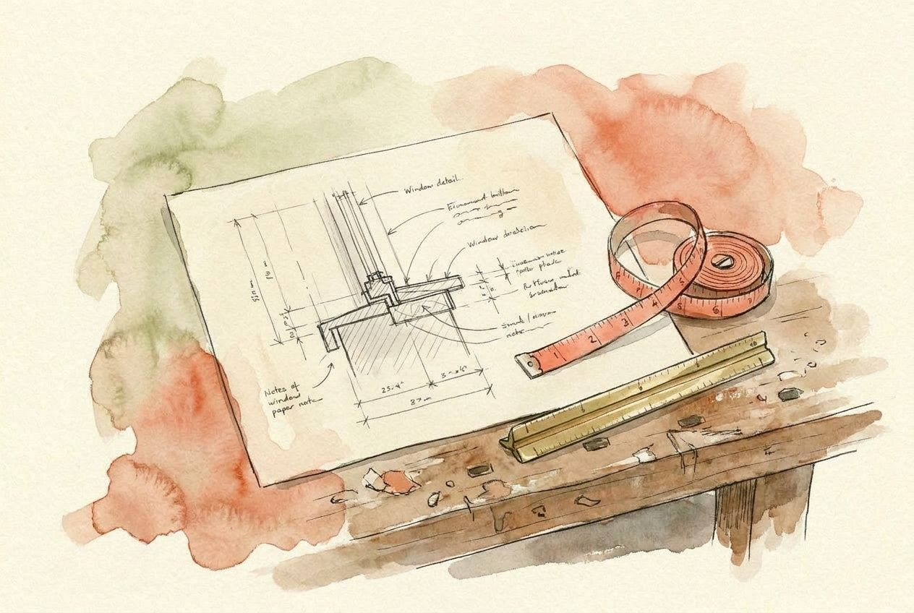
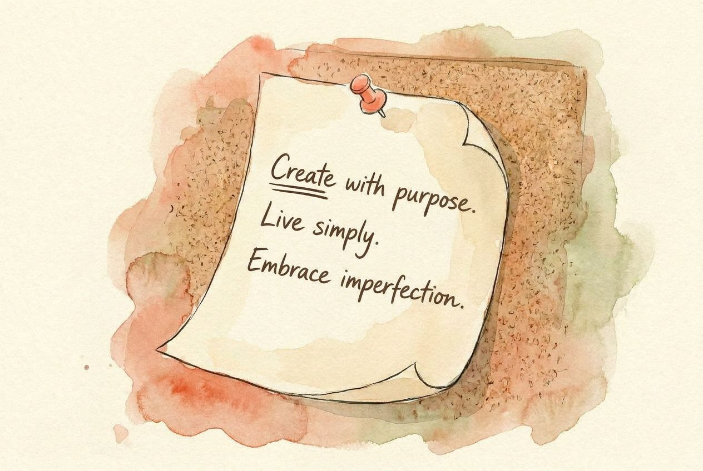

locked style anchor (passed as reference_images[0] on every other call)
§01 Hero · ambient backdrop · the rulebook itself
between Examples → Study · eight folded papers

§03 Study · diagnostic overlay on a printed page
between Without/With → Foundations · draft vs final

§05 Type · serif G with construction grid

§05 Colour · single coral wash at 3% footprint

§05 Space · architect's freehand floor plan

§05 Motion · Muybridge brushstroke strip

§05 Voice · marginalia, three honest words

§07 Install · Claude Code = sealed letter

§07 Install · Cursor = brass drafting compass

§07 Install · Codex = a literal medieval codex

footer · wax-seal colophon mark
examples plate · indie podcast (Tide)

examples plate · bakery (Maple)

examples plate · architecture studio

examples plate · manifesto